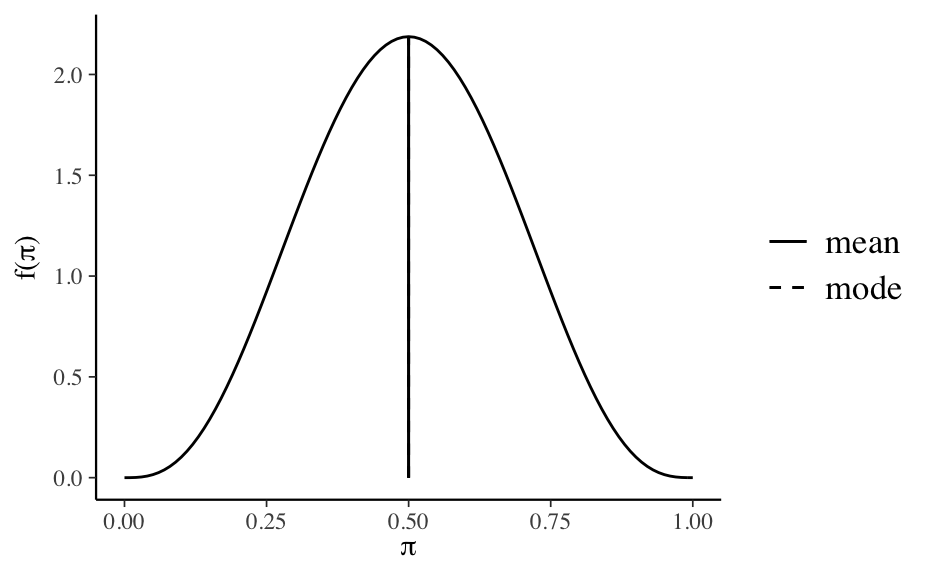
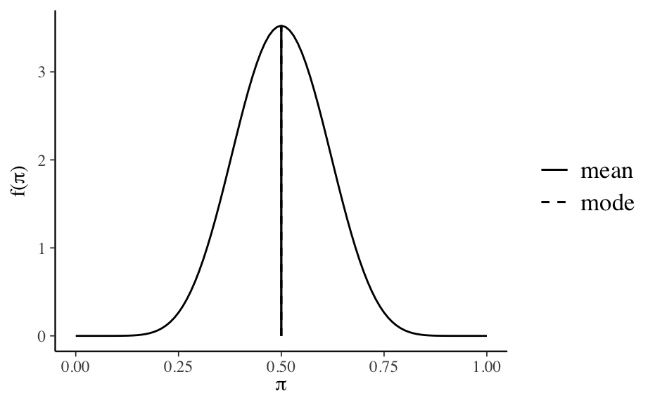
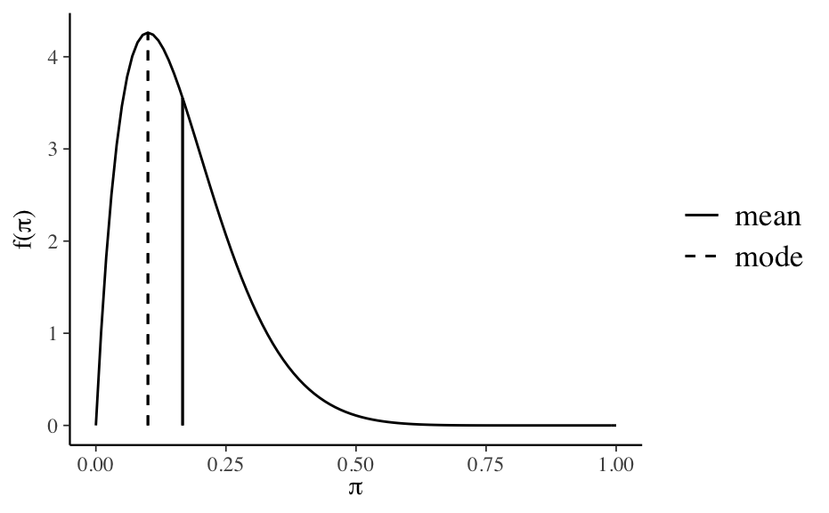
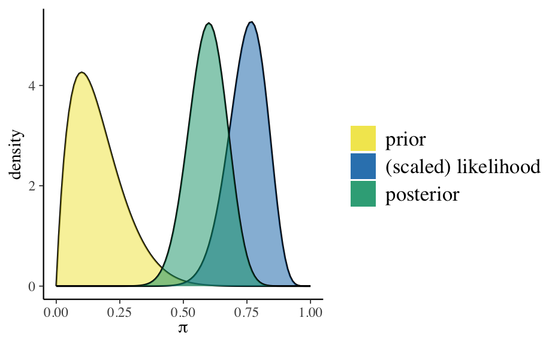
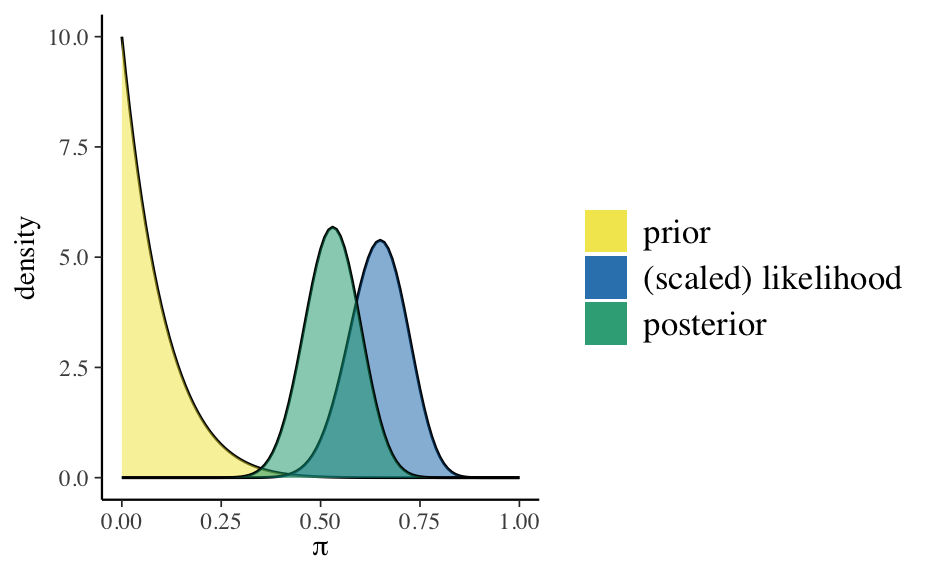

Capitolo 2 Distribuzioni a priori coniugate
Obiettivo di questo Capitolo è fornire un esempio di derivazione della distribuzione a posteriori scegliendo quale distribuzione a priori una distribuzione coniugata. Esamineremo qui il caso più semplice, ovvero il modello Beta-Binomiale.
2.1 Il denominatore bayesiano
In un problema bayesiano i dati \(y\) provengono da una distribuzione \(p(y \mid \theta)\) e al parametro \(\theta\) viene assegnata una distribuzione a priori \(p(\theta)\).2 La scelta della distribuzione a priori ha importanti conseguenze di tipo computazionale. Infatti, a meno di non utilizzare particolari forme analitiche, risulta impossibile ottenere espressioni esplicite per la distribuzione a posteriori. Ciò dipende dall’espressione a denominatore della formula di Bayes \[\begin{equation} p(\theta \mid y) = \frac{p(\theta) p(y \mid \theta)}{\int p(\theta) p(y \mid \theta) d \theta} \end{equation}\] il cui calcolo non è eseguibile in modo analitico in forma chiusa. Per non incorrere in problemi nel calcolo della distribuzione a posteriori vengono usate le distribuzioni provenienti da famiglie coniugate. Una distribuzione di probabilità a priori \(p(\theta)\) si dice coniugata al modello usato se la distribuzione a priori e la distribuzione a posteriori hanno la stessa forma funzionale. Dunque, le due distribuzioni differiscono solo per il valore dei parametri.
L’uso di distribuzioni a priori coniugate, pur consentendo di determinare la distribuzione a posteriori per via analitica, limita però di molto le possibili scelte del ricercatore. Nel senso che non è sempre sensato, dal punto di vista teorico, utilizzare distribuzioni a priori coniugate per la verosimiglianza per i parametri di interesse. Detto in altre parole: è possibile ottenere la distribuzione posteriore per via analitica solo per alcune specifiche combinazioni di distribuzione a priori e verosimiglianza, ma questo limita considerevolmente la flessibilità della modellizzazione.3
2.2 Il modello Beta-Binomiale
Per fare un esempio concreto, considereremo qui i dati di Zetsche, Bürkner, e Renneberg (2019) – per una descrizione di tale ricerca si veda l’Appendice ??. Nel campione dei 30 partecipanti clinici di Zetsche, Bürkner, e Renneberg (2019), le aspettative future di 23 partecipanti risultano distorte negativamente e quelle di 7 partecipanti risultano distorte positivamente. Nel seguito, indicheremo con \(\theta\) la probabilità che le aspettative di un paziente clinico siano distorte negativamente. Ci poniamo il problema di ottenere una stima a posteriori di \(\theta\) avendo osservato 23 “successi” in 30 prove.4
I dati osservati (\(y = 23\)) possono essere considerati la manifestazione di una variabile casuale Bernoulliana. In tali circostanze, esiste una famiglia di distribuzioni che, qualora venga scelta per la distribuzione a priori, fa sì che la distribuzione a posteriori abbia la stessa forma funzionale della distribuzione a priori. Questo consente una soluzione analitica dell’integrale che compare a denominatore nella formula di Bayes. Nel caso presente, la famiglia di distribuzioni che ha questa proprietà è la distribuzione Beta.
2.2.1 Parametri della distribuzione Beta
Usando la distribuzione Beta è possibile esprimere diverse credenze iniziali rispetto a \(\theta\). La scelta di \(\alpha=4\) e \(\beta=4\) quali parametri per la distribuzione a priori Beta, ad esempio, corrisponde alla credenza a priori che associa all’evento “presenza di una aspettativa futura distorta negativamente” una grande incertezza: il valore 0.5 è il valore di \(\theta\) più plausibile, ma anche gli altri valori del parametro (tranne gli estremi) sono ritenuti piuttosto plausibili. Questa distribuzione a priori esprime la credenza che sia egualmente probabile osservare una “aspettativa futura distorta negativamente” oppure non osservarla.
library("bayesrules")
plot_beta(alpha = 4, beta = 4, mean = TRUE, mode = TRUE)
Possiamo quantificare la nostra incertezza calcolando, con un grado di fiducia del 95%, la regione nella quale, in base a tale credenza a priori, si trova il valore del parametro. Per ottenere tale intervallo di credibilità a priori, usiamo la funzione qbeta() di \(\R\). In qbeta() i parametri \(\alpha\) e \(\beta\) sono chiamati shape1 e shape2:
qbeta(c(0.025, 0.975), shape1 = 4, shape2 = 4)
#> [1] 0.1840516 0.8159484Se scegliamo \(\alpha=10\) e \(\beta=10\) supponiamo ancora a priori che sia tanto plausibile osservare come non osservare una “aspettativa futura distorta negativamente”.
plot_beta(alpha = 10, beta = 10, mean = TRUE, mode = TRUE) Ma ora la nostra certezza a priori sul valore del parametro è maggiore, come indicato dall’intervallo al 95%:
qbeta(c(0.025, 0.975), shape1 = 10, shape2 = 10)
#> [1] 0.2886432 0.7113568Quale distribuzione a priori dobbiamo scegliere? In un problema concreto di analisi dei dati, la scelta della distribuzione a priori dipende dalle credenze a priori che vogliamo includere nell’analisi dei dati. Se non abbiamo alcuna informazione a priori, possiamo usare \(\alpha=1\) e \(\beta=1\), che produce una distribuzione a priori uniforme. Questa, tuttavia, è una cattiva idea, se pensiamo al problema della riparametrizzazione. In tali circostanze è invece raccomandato usare una distribuzione a priori vagamente informativa, come \(\text{Beta}(2, 2)\).
Nella successiva discussione, per fare un esempio, useremo quale distribuzione a priori una \(\mbox{Beta}(2, 10)\), ovvero: \[ p(\theta) = \frac{\Gamma(12)}{\Gamma(2)\Gamma(10)}\theta^{2-1} (1-\theta)^{10-1}. \]
plot_beta(alpha = 2, beta = 10, mean = TRUE, mode = TRUE) La \(\mbox{Beta}(2, 10)\) esprime la credenza che \(\theta\) assume valori \(< 0.5\), con il valore più plausibile pari a cicrca 0.1.
2.2.2 La specificazione della distribuzione a posteriori
Una volta scelta una distribuzione a priori di tipo Beta, i cui parametri rispecchiano le nostre credenze a priori su \(\theta\), la distribuzione a posteriori viene specificata dalla formula di Bayes: \[ \text{distribuzione a posteriori} = \frac{\text{verosimiglianza}\cdot\text{distribuzione a priori}}{\text{verosimiglianza marginale}}. \] Nel caso presente abbiamo \[ p(\theta \mid n=30, y=23) = \frac{\Big[\binom{30}{23}\theta^{23}(1-\theta)^{30-23}\Big]\Big[\frac{\Gamma(12)}{\Gamma(2)\Gamma(10)}\theta^{2-1} (1-\theta)^{10-1}\Big]}{p(y = 23)}, \] laddove \(p(y = 23)\) è \(\int_0^1p(y = 23 \mid n = 30, \theta)\). Questo termine, ovvero la verosimiglianza marginale, è una costante di normalizzazione che fa sì che l’area sottesa alla densità a posteriori sia unitaria. Raccogliendo tutte le costanti dell’equazione precedente abbiamo: \[ p(\theta \mid n=30, y=23) =\left[\frac{\binom{30}{23}\frac{\Gamma(12)}{\Gamma(2)\Gamma(10)}}{p(y = 23)}\right] \theta^{23}(1-\theta)^{7}\theta^{1} (1-\theta)^{9}. \] Se ignoriamo il termine costante all’interno della parentesi quadra otteniamo: \[\begin{align} p(\theta \mid n=30, y=23) &\propto \theta^{23}(1-\theta)^{7}\theta^{1} (1-\theta)^{9}\notag\\ &\propto \theta^{24}(1-\theta)^{16}.\notag \end{align}\] Il termine di destra dell’equazione precedente corrisponde ad una distribuzione Beta di parametri \(\alpha=25\) e \(\beta = 17\). Il risultato così ottenuto individua il kernel della distribuzione a posteriori, ovvero la distribuzione a posteriori non normalizzata. Infatti, l’area sotto la curva (AUC) non è 1:
postFun <- function(theta) {
theta^24 * (1 - theta)^16
}
(AUC <- integrate(postFun, lower = 0, upper = 1)$value)
#> [1] 3.880577e-13Per ottenere una distribuzione di densità è necessario includere una costante di normalizzazione. In base alla definizione della distribuzione Beta, tale costante è \[ \frac{\Gamma(a+b)}{\Gamma(a)\Gamma(b)} = \frac{\Gamma(42)}{\Gamma(25)\Gamma(17)}. \] Questo termine non è altro che l’integrale della distribuzione a posteriori non normalizzata che è stato calcolato in precedenza:
postFun <- function(theta) {
theta^24 * (1 - theta)^16 / AUC
}
integrate(postFun, lower = 0, upper = 1)$value
#> [1] 1Infatti, l’area sottesa alla funzione \[ p(\theta \mid n=30, y=23) = \frac{\Gamma(42)}{\Gamma(25)\Gamma(17)}\theta^{25-1}(1-\theta)^{17-1} = \text{Beta}(y+a, n-y+b) \] somma ad 1, ovvero,
postFunNor <- function(theta) {
(factorial(42 - 1) / (factorial(25 - 1) * factorial(17 - 1))) *
theta^(25 - 1) * (1 - theta)^(17 - 1)
}
(AUC2 <- integrate(postFunNor, lower = 0, upper = 1)$value)
#> [1] 1Possiamo quindi concludere dicendo che siamo partiti da una verosimiglianza \(\Bin(n = 30, y = 23 \mid \theta)\) e, moltiplicando la verosimiglianza per la distribuzione a priori \(\theta \sim \text{Beta}(2, 10)\), abbiamo ottenuto la distribuzione a posteriori \(p(\theta \mid n, y) \sim \text{Beta}(25, 17)\). Questo è un esempio di analisi coniugata: la distribuzione a posteriori del parametro ha la stessa forma funzionale della distribuzione a priori. La presente combinazione di verosimiglianza e distribuzione a priori è chiamata caso coniugato Beta-Binomiale ed è descritto dal seguente teorema.
Teorema 2.1 Sia data la funzione di verosimiglianza \(\Bin(n, y \mid \theta)\) e sia \(\mathrm{Beta}(\alpha, \beta)\) una distribuzione a priori. In tali circostanze, la distribuzione a posteriori del parametro \(\theta\) sarà una distribuzione \(\mathrm{Beta}(\alpha + y, \beta + n - y)\).
In particolare, possiamo calcolare qual è il valore atteso a posteriori di \(\theta\). Essendo \(\E[\text{Beta}(\alpha, \beta)] = \frac{\alpha}{\alpha + \beta}\), il valore atteso a posteriori di \(\theta\) sarà \[\begin{equation} \E_{\text{post}} [\mathrm{Beta}(\alpha + y, \beta + n - y)] = \frac{\alpha + y}{\alpha + \beta +n}. \tag{2.1} \end{equation}\]
Esempio 2.1 Per i dati esaminati, usando la 2.1 possiamo ottenere l’intervallo di credibilità a posteriori del 95% per il parametro \(\theta\) come:
qbeta(c(0.025, 0.975), shape1 = 25, shape2 = 17)
#> [1] 0.4450478 0.7368320La media della distribuzione a posteriori è
25 / (25 + 17)
#> [1] 0.5952381La moda della distribuzione a posteriori è
(25 - 1) / (25 + 17 - 2)
#> [1] 0.6La deviazione standard della distribuzione a priori è
sqrt((25 * 17) / ((25 + 17)^2 * (25 + 17 + 1)))
#> [1] 0.0748533Esempio 2.2 La funzione \(\R\) plot_beta_binomial() del pacchetto bayesrules descrive in maniera grafica l’aggiornamento bayesiano Beta-Binomiale:
bayesrules::plot_beta_binomial(
alpha = 2, beta = 10, y = 23, n = 30
)
Un sommario delle distribuzioni a priori e a posteriori si ottiene usando la funzione summarize_beta_binomial():
bayesrules:::summarize_beta_binomial(
alpha = 2, beta = 10, y = 23, n = 30
)
#> model alpha beta mean mode var sd
#> 1 prior 2 10 0.1666667 0.1 0.010683761 0.1033623
#> 2 posterior 25 17 0.5952381 0.6 0.005603016 0.0748533Esempio 2.3 Consideriamo un altro esempio discusso da Johnson, Ott, e Dogucu (2022). Nel 1963, Stanley Milgram presentò una ricerca sulla propensione delle persone a obbedire agli ordini di figure di autorità, anche quando tali ordini possono danneggiare altre persone (Milgram 1963). Nell’articolo, Milgram descrive lo studio come
consist[ing] of ordering a naive subject to administer electric shock to a victim. A simulated shock generator is used, with 30 clearly marked voltage levels that range from IS to 450 volts. The instrument bears verbal designations that range from Slight Shock to Danger: Severe Shock. The responses of the victim, who is a trained confederate of the experimenter, are standardized. The orders to administer shocks are given to the naive subject in the context of a `learning experiment’ ostensibly set up to study the effects of punishment on memory. As the experiment proceeds the naive subject is commanded to administer increasingly more intense shocks to the victim, even to the point of reaching the level marked Danger: Severe Shock.
All’insaputa del partecipante, gli shock elettrici erano falsi e l’attore stava solo fingendo di provare il dolore dello shock.
Johnson, Ott, e Dogucu (2022) fanno inferenza sui risultati dello studio di Milgram mediante il modello Beta-Binomiale. Il parametro di interesse è \(\theta\), la probabiltà che una persona obbedisca all’autorità (in questo caso, somministrando lo shock più severo), anche se ciò significa recare danno ad altri. Johnson, Ott, e Dogucu (2022) ipotizzano che, prima di raccogliere dati, le credenze di Milgram relative a \(\theta\) possano essere rappresentate mediante una \(\text{Beta}(1, 10)\). Sia \(y = 26\) il numero di soggetti che, sui 40 partecipanti allo studio, aveva accettato di infliggere lo shock più severo. Assumendo che ogni partecipante si comporti indipendentemente dagli altri, possiamo modellare la dipendenza di \(y\) da \(\theta\) usando la distribuzione binomiale. Giungiamo dunque al seguente modello bayesiano Beta-Binomiale:
\[\begin{align}
y \mid \theta & \sim \Bin(n = 40, \theta) \notag\\
\theta & \sim \text{Beta}(1, 10) \; . \notag
\end{align}\]
Usando le funzioni di bayesrules possiamo facilmente calcolare i parametri e le proprietà della distribuzione a posteriori:
bayesrules:::summarize_beta_binomial(
alpha = 1, beta = 10, y = 26, n = 40
)
#> model alpha beta mean mode var
#> 1 prior 1 10 0.09090909 0.0000000 0.006887052
#> 2 posterior 27 24 0.52941176 0.5306122 0.004791057
#> sd
#> 1 0.08298827
#> 2 0.06921746Il processo di aggiornamento bayesiano è descritto dalla figura seguente:
bayesrules:::plot_beta_binomial(
alpha = 1, beta = 10, y = 26, n = 40
)
2.3 Principali distribuzioni coniugate
Esistono molte altre combinazioni simili di verosimiglianza e distribuzione a priori le quali producono una distribuzione a posteriori che ha la stessa densità della distribuzione a priori. Sono elencate qui sotto le più note coniugazioni tra modelli statistici e distribuzioni a priori.
Per il modello Normale-Normale \(\mathcal{N}(\mu, \sigma^2_0)\), la distribizione iniziale è \(\mathcal{N}(\mu_0, \tau^2)\) e la distribuzione finale è \(\mathcal{N}\left(\frac{\mu_0\sigma^2 + \bar{y}n\tau^2}{\sigma^2 + n\tau^2}, \frac{\sigma^2\tau^2}{\sigma^2 + n\tau^2} \right)\).
Per il modello Poisson-gamma \(\text{Po}(\theta)\), la distribizione iniziale è \(\Gamma(\lambda, \delta)\) e la distribuzione finale è \(\Gamma(\lambda + n \bar{y}, \delta +n)\).
Per il modello esponenziale \(\text{Exp}(\theta)\), la distribizione iniziale è \(\Gamma(\lambda, \delta)\) e la distribuzione finale è \(\Gamma(\lambda + n, \delta +n\bar{y})\).
Per il modello uniforme-Pareto \(\text{U}(0, \theta)\), la distribizione iniziale è \(\text{Pa}(\alpha, \varepsilon)\) e la distribuzione finale è \(\text{Pa}(\alpha + n, \max(y_{(n)}, \varepsilon))\).
Considerazioni conclusive
Lo scopo di questa discussione è stato quello di mostrare come sia possibile combinare le nostre conoscenze a priori (espresse nei termini di una densità di probabilità) con le evidenze fornite dai dati (espresse nei termini della funzione di verosimiglianza), così da determinare, mediante il teorema di Bayes, una distribuzione a posteriori, la quale condensa l’incertezza che abbiamo sul parametro \(\theta\). Per illustrare tale problema, abbiamo considerato una situazione nella quale \(\theta\) corrisponde alla probabilità di successo in una sequenza di prove Bernoulliane. Abbiamo visto come, in queste circostanze, sia ragionevole esprimere le nostre credenze a priori mediante la densità Beta, con opportuni parametri. L’inferenza rispetto ad una proporzione rappresenta un caso particolare, ovvero un caso nel quale la distribuzione a priori è Beta e la verosimiglianza è Binomiale. In tali circostanze, la distribuzione a posteriori diventa una distribuzione Beta – questo è il cosiddetto modello Beta-Binomiale. Dato che utilizza una distribuzione a priori coniugata, dunque, il modello Beta-Binomiale rende possibile la determinazione analitica dei parametri della distribuzione a posteriori.
References
La scelta della distribuzione a priori è l’aspetto cruciale dell’impostazione bayesiana in quanto essa è lo strumento attraverso cui le informazioni extra-sperimentali vengono inserite nel procedimento induttivo. La scelta della distribuzione a priori che meglio rappresenta le credenze iniziali implica che agenti diversi possono specificare sia le stesse distribuzioni di probabilità ma con diversi valori dei parametri, sia diverse distribuzioni di probabilità. Da ciò deriva una componente soggettiva.↩︎
Per questa ragione, la strada principale che viene seguita nella modellistica bayesiana è quella che porta a determinare la distribuzione a posteriori non per via analitica, ma bensì mediante metodi numerici. La simulazione fornisce dunque la strategia generale del calcolo bayesiano. A questo fine vengono usati i metodi di campionamento detti Monte-Carlo Markov-Chain (MCMC). Tali metodi costituiscono una potente e praticabile alternativa per la costruzione della distribuzione a posteriori per modelli complessi e consentono di decidere quali distribuzioni a priori e quali distribuzioni di verosimiglianza usare sulla base di considerazioni teoriche soltanto, senza dovere preoccuparsi di altri vincoli. Dato che è basata su metodi computazionalmente intensivi, la stima numerica della funzione a posteriori può essere svolta soltanto mediante software. In anni recenti i metodi bayesiani di analisi dei dati sono diventati sempre più popolari proprio perché la potenza di calcolo necessaria per svolgere tali calcoli è ora alla portata di tutti. Questo non era vero solo pochi decenni fa.↩︎
Si noti un punto importante: dire semplicemente che la stima di \(\theta\) è uguale a 23/30 = 0.77 ci porta ad ignorare il livello di incertezza associato a tale stima. Infatti, lo stesso valore (0.77) si può ottenere come 23/30, o 230/300, o 2300/3000, o 23000/30000, ma l’incertezza di una stima pari a 0.77 è molto diversa nei quattro casi. Quando si traggono conclusioni dai dati è invece necessario quantificare il livello della nostra incertezza relativamente alla stima del parametro di interesse (nel caso presente, \(\theta\)). Lo strumento ci consente di quantificare tale incertezza è la distribizione a posteriori \(p(\theta \mid y)\). Ovviamente, \(p(\theta \mid y)\) assume forme molto diverse nei quattro casi descritti sopra.↩︎